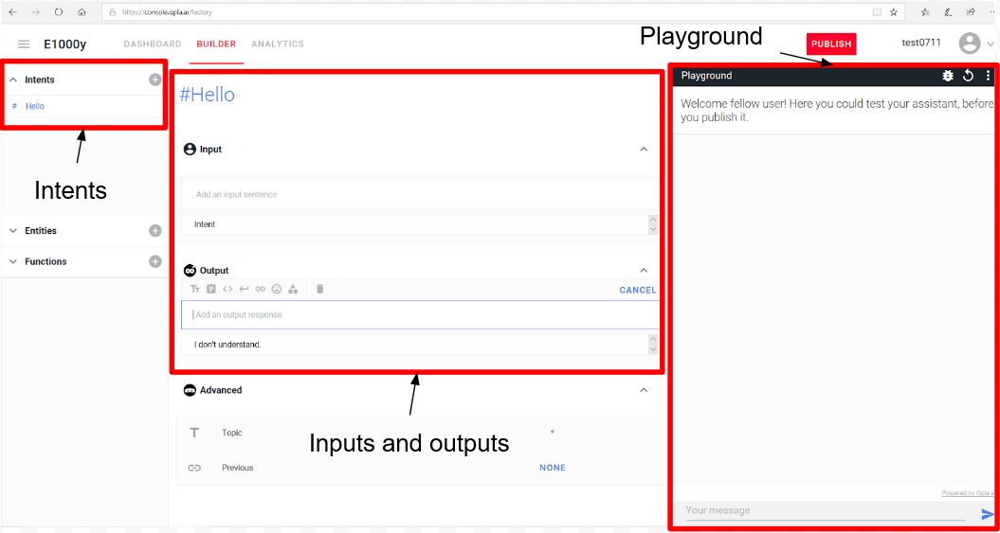
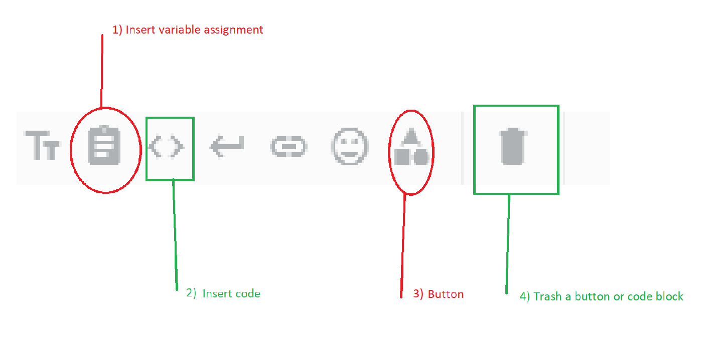

How to
Parameter
Opla Chatbot

Documentation and tricks
Presentation
The console builder
Documentation conventions
Diagram 1 : Pizzas!
Diagram 2 : Contact
#Any Intents
"No" loops
Conclusion
Presentation
Opla is an open source chatbot, which whoever can paramater and integrate as they wish. Here are some tips and tricks to learn how to write a conversation.
The console builder
is as shown :

it is divided into three parts :
- The playground, where the bot is tested
- The intents, which are the keywords used by user or computer to establish the conversation. Intents are preceded by a sharp key.
- Inputs and Outputs, specific to each Intent, which are the responses (Output) that the robot gives to each entered data (Input). It's really in Outputs that 80% of the conversation is set.
In the Outputs lies a menu with clickable items to set the interface up, we are going to explain some of them :
